El sistema reúne la contabilidad de Paguro Corp en un solo lugar. Usted sigue haciendo lo mismo de siempre, que es guardar los soportes en Google Drive, y el sistema se encarga del resto:
Con los documentos aprobados, el sistema arma los reportes contables: estado de resultados, balance, IVA y retenciones, cuentas por pagar y más. Cada cifra tiene un enlace a su soporte en el Drive, así que nunca hay que buscar a mano de dónde salió un valor.
Con el sistema encendido en el computador, abra el navegador (Chrome o Edge) y entre a http://localhost:3000. Escriba su correo de la empresa y su contraseña.
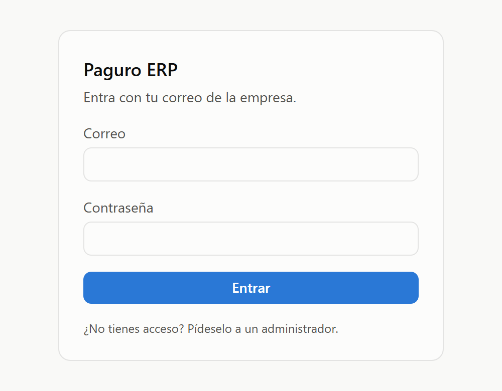
A la izquierda está el menú. El número al lado de Documentos indica cuántos documentos esperan su revisión.
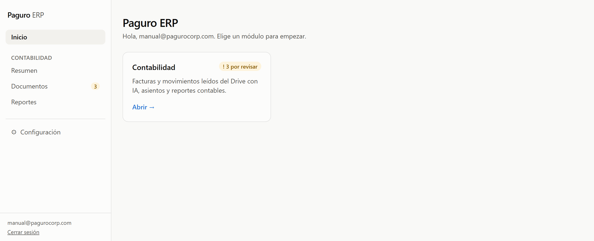
| Opción | Para qué sirve |
|---|---|
| Resumen | Cómo va el mes: ingresos, gastos, utilidad y pendientes. |
| Documentos | Todo lo que se leyó del Drive. Aquí se revisa y se aprueba. |
| Reportes | Los reportes contables, con enlaces a cada soporte. |
| ⚙ Configuración | Saldos iniciales de la contabilidad. |
Guarde cada soporte en Google Drive, dentro de la carpeta 02_2026, en la carpeta del mes que corresponde (enero, febrero, …). El nombre del archivo no importa.
| Qué subir | Ejemplos |
|---|---|
| Facturas de compra y de gasto | Proveedores, agencias de aduanas, fletes, servicios. |
| Facturas de venta | Las que Paguro le emite a sus clientes. |
| Pagos de impuestos | Recibos 490 de la DIAN, comprobantes PSE. |
| Planillas de seguridad social | PILA pagada. |
| Nómina | Comprobante de la transferencia de la empresa al empleado. |
| Aportes del socio | Comprobante de la transferencia de su cuenta personal a la cuenta de Paguro. |
| Transferencias a proveedores | Pagos nacionales o al exterior (SWIFT). |
No hay que hacer nada más. El sistema revisa el Drive cada 15 minutos mientras está encendido, y una vez al encenderlo.
Muestra cómo va el mes con los documentos aprobados. Cambie el mes con el selector de arriba a la derecha.
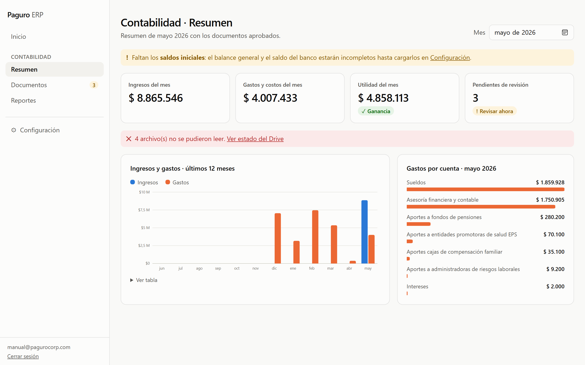
Arriba de la lista está la franja de Google Drive. Indica cuándo fue la última revisión y si llegaron documentos nuevos. Si no quiere esperar los 15 minutos después de subir algo, haga clic en Sincronizar ahora.
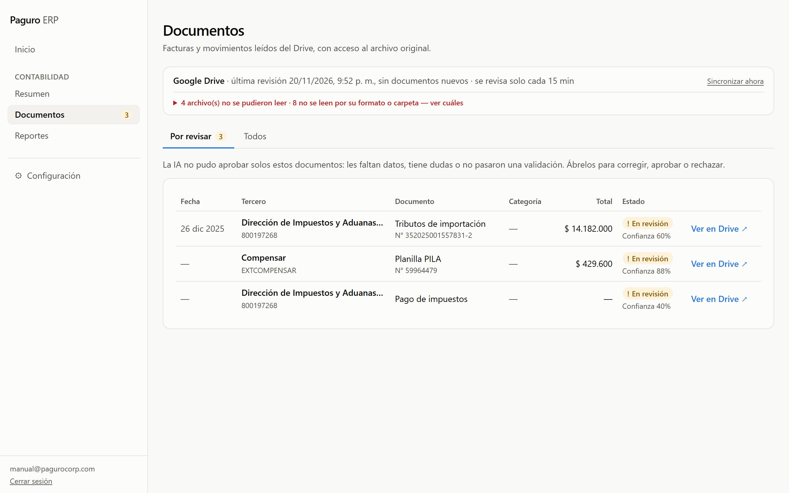
Si hay archivos con problemas, aparece un aviso en rojo. Haga clic en ver cuáles: cada archivo dice por qué no se leyó, qué hacer y tiene su enlace Ver en Drive.
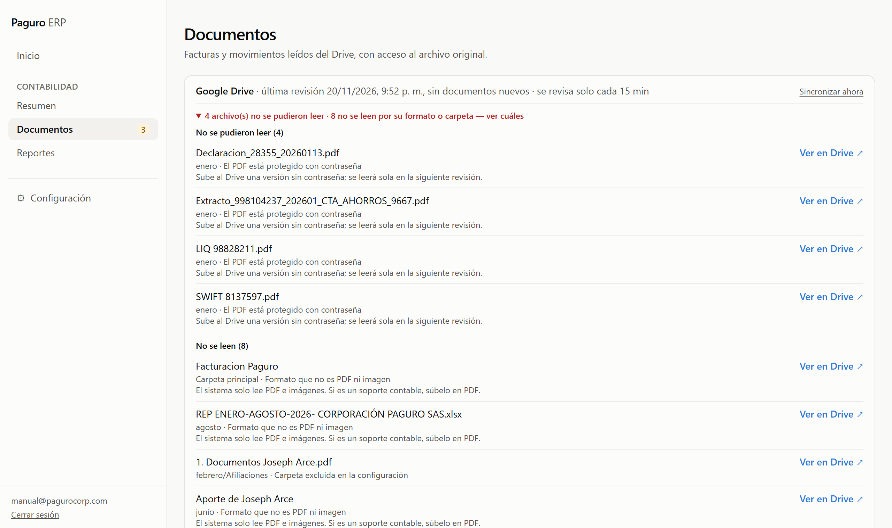
| Pestaña | Qué muestra |
|---|---|
| Por revisar | Lo que la inteligencia artificial no pudo aprobar sola. Es su lista de tareas. |
| Todos | Todos los documentos, con búsqueda (por proveedor, NIT o número) y filtros por mes, tipo, estado y categoría. |
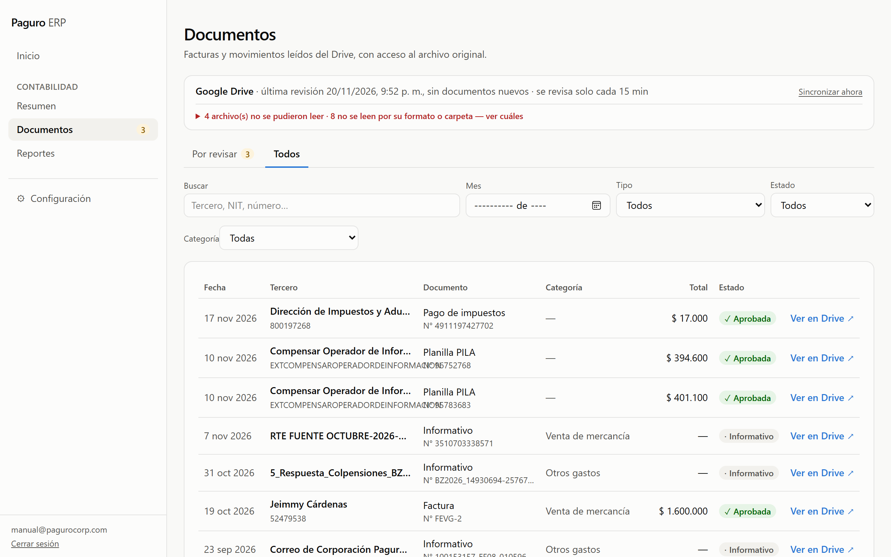
| Estado | Qué significa |
|---|---|
| ✓ Aprobada | Está en la contabilidad y tiene su asiento. |
| ! En revisión | Espera que usted lo revise. Todavía no cuenta en los reportes. |
| ✕ Rechazada | Usted la rechazó. No cuenta en los reportes. |
| · Informativo | No es un movimiento de dinero (por ejemplo, una declaración sin pago o un desprendible), o es un duplicado de otro documento. No cuenta. |
En Por revisar, haga clic en el nombre del proveedor para abrir el documento. A la izquierda está el archivo original y a la derecha lo que leyó el sistema.
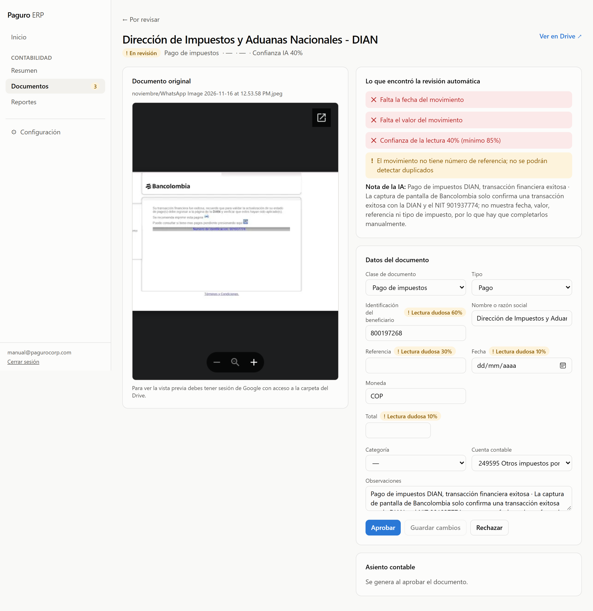
| Botón | Qué hace |
|---|---|
| Aprobar (o Guardar y aprobar) | Guarda los cambios, genera el asiento contable y el documento pasa a la contabilidad. Si faltan datos, el sistema dice cuáles. |
| Guardar cambios | Guarda las correcciones sin aprobar, para terminar después. |
| Rechazar | El documento no se registra, por ejemplo si no es de la empresa. Puede escribir el motivo. |
Un documento aprobado muestra su asiento contable (débitos y créditos por cuenta) y, en las facturas, el detalle de ítems.
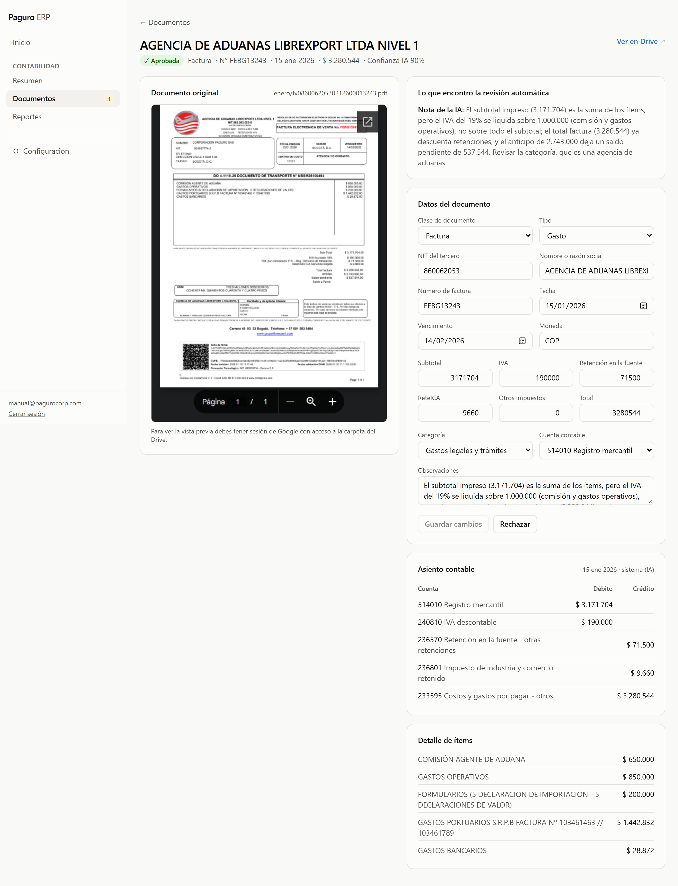
Elija el reporte y las fechas: se actualiza solo. Con Exportar CSV lo descarga para abrirlo en Excel.
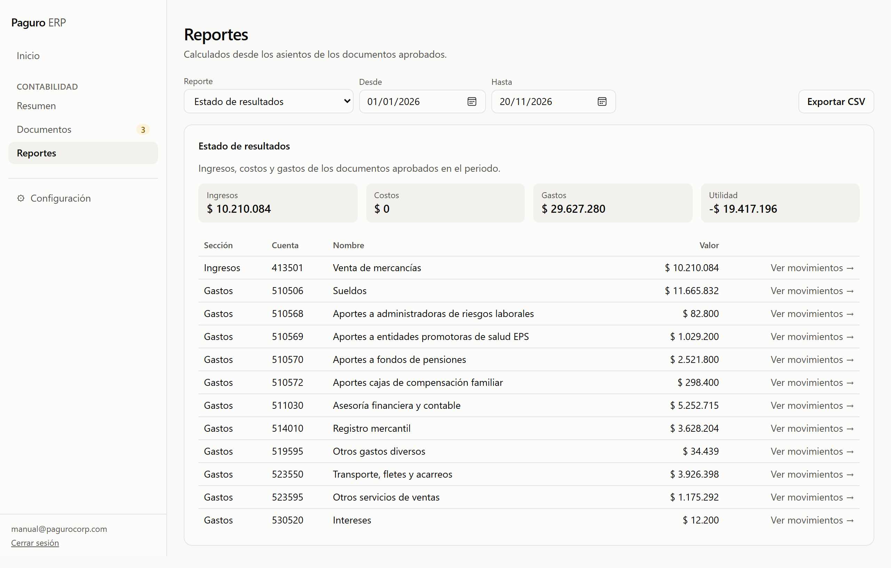
| Reporte | Qué muestra | Al hacer clic en una fila |
|---|---|---|
| Estado de resultados | Ingresos, costos, gastos y utilidad del periodo. | Movimientos de esa cuenta |
| Balance general | Activos, pasivos y patrimonio a una fecha. | Movimientos de esa cuenta |
| Balance de comprobación | Saldo anterior, movimientos y saldo final por cuenta. | Movimientos de esa cuenta |
| Gastos por categoría | Cuánto se gastó en cada tipo de gasto. | Las facturas de esa categoría |
| Gastos por proveedor | Cuánto se le compró a cada proveedor. | Las facturas de ese proveedor |
| IVA y retenciones | IVA generado, descontable y retenciones por mes. | Los documentos de ese mes |
| Cuentas por pagar | Lo que se le debe a cada proveedor. | Los documentos de ese proveedor |
| Cuentas por cobrar | Lo que le deben los clientes. | Los documentos de ese cliente |
| Libro mayor | Cada movimiento por cuenta con su saldo. | El documento y su archivo en el Drive |
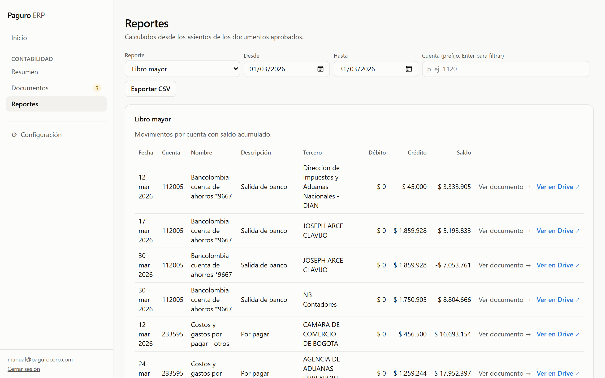
Los saldos iniciales son lo que la empresa tenía en cada cuenta antes de empezar a usar el sistema, por ejemplo el saldo del banco al 1 de enero de 2026. Los entrega el contador. Sin ellos, el balance general solo muestra los movimientos registrados en el sistema.
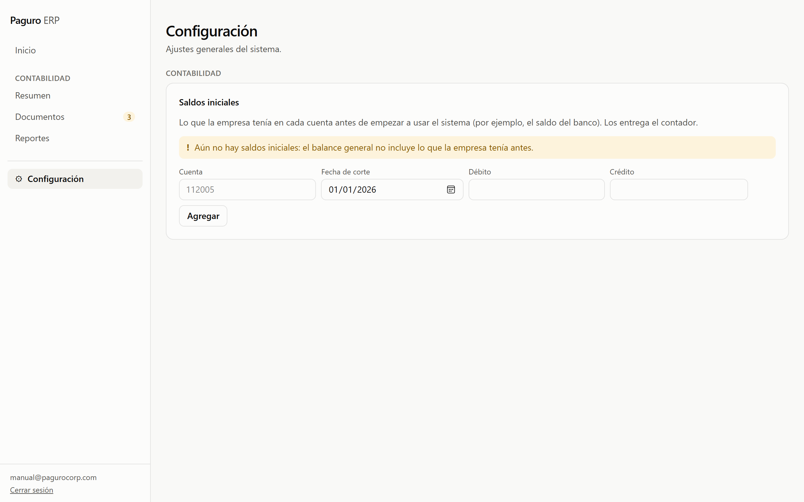
Para cargar un saldo: escriba el código de la cuenta (de 6 dígitos, por ejemplo 112005 para la cuenta de ahorros de Bancolombia), la fecha de corte y el valor en Débito o en Crédito, y haga clic en Agregar. Solo un administrador puede cargar o borrar saldos. Al final, el total de débitos debe ser igual al de créditos; si no, el sistema lo avisa.
El sistema revisa el Drive cada 15 minutos. Para no esperar, en Documentos haga clic en Sincronizar ahora. Si aun así no aparece, abra el aviso de archivos con problemas: puede que no sea PDF ni imagen, que tenga contraseña o que esté fuera de la carpeta del año.
El aviso explica qué hacer. El caso más común es que Google pida volver a iniciar sesión por seguridad: avísele a quien instaló el sistema. Mientras tanto, lo que ya está registrado sigue disponible.
Faltan entradas de dinero: los aportes del socio y los cobros de las ventas. Suba al Drive los comprobantes de los aportes (ver sección 3) y cargue el saldo inicial del banco (sección 9).
Ábralo, corrija el dato y apruébelo de nuevo. El asiento se rehace con los datos corregidos y el cambio queda en el historial.
El sistema detecta los duplicados y los marca como · Informativo. Si se le escapa uno, ábralo y Rechácelo.
Los documentos no se borran: se rechazan, para que quede el registro de por qué no se contabilizó. Ojo: borrar el archivo del Drive no lo quita de la contabilidad; lo ya registrado se conserva. Para sacarlo de los reportes, rechácelo en el sistema.
No. El sistema corre en este computador: con el computador apagado no se revisa el Drive. Al encenderlo de nuevo, se pone al día solo con lo que se haya subido.
Estos puntos se registraron con un criterio razonable, pero conviene que el contador los confirme:
| Tema | Cómo está hoy |
|---|---|
| Aportes del socio | Se registran en el patrimonio, cuenta 310520 «Aportes de socios por capitalizar». Si el contador prefiere otra cuenta (por ejemplo, una deuda con el socio), se cambia en la configuración sin perder nada. |
| Prima de junio | El pago «nómina Joseph Prima» (2.584.238) está completo en Sueldos. Si se quiere, se separa la prima en la cuenta 510536. |
| Fletes y agencia de aduanas | Se registran como gasto. Pueden ir como parte del costo de la mercancía importada. |
| Saldos iniciales | Aún no se han cargado (sección 9). |
| Plan de cuentas | Basado en el PUC colombiano, pendiente de validación general. |